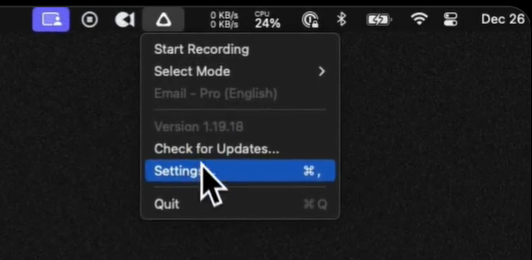
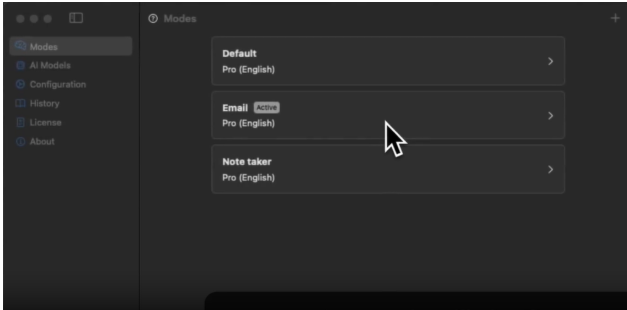
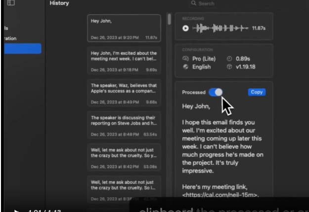

Writing an AI Model Prompt
Introduction
Superwhisper is more than just a voice dictation software.
Superwhisper’s AI is very efficient, but it needs you to select how to format your input.
The example illustrates how to get Superwhisper to write an email without you typing.
Steps
- Go to settings
- Click on modes
- Click on Email
- Click on language model
- Click on change language prompt
- Start recording
- Stop recording
- Optionally, you can see your original voice input and the processed input:
- Go to Settings
- Go to History
- Click on Transcript toggle to switch from original to processed
- You can also watch the following video: Video



Try it Yourself
It might take some time to figure out the perfect language prompt for you.
It is highly encouraged that you make some email drafts to test out different language prompts.
You can also get started by using the following prompts:
Suggested Prompts:
- [Placeholder for prompts]